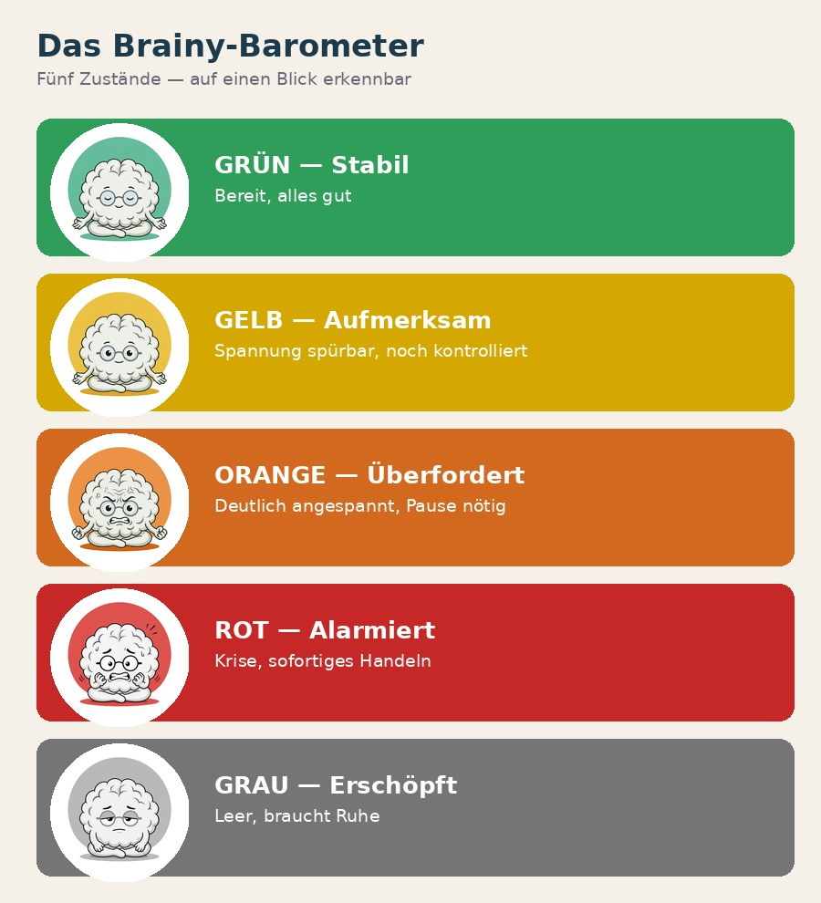

🌡️ Das Barometer
Das Barometer ist das zentrale Kommunikationswerkzeug im KLARTEXT-System. Fünf Farben zeigen den Regulationszustand des Kindes – und bestimmen, welches Werkzeug INGRA als nächstes einsetzt.

Brainy sagt: Das Barometer gibt dem Kind eine Stimme ohne Worte. Und INGRA weiß sofort: welches Werkzeug jetzt passt – und welches nicht.

Brainy zeigt alle fünf Zustände — für Kind-Barometer und INGRA-Barometer im direkten Vergleich.
💬 Das kLAR-Modell
kLAR ist die verbindliche Interventionsstruktur für Gelb und Orange. Vier Schritte – immer in dieser Reihenfolge. Ab Rot gilt das Feuerwehr-Protokoll (→ Element 05).
Brainy sagt: kLAR wirkt nur in Reihenfolge. Wer bei A anfängt, überspringt die Sicherheit – und das spürt das Kind sofort.
🃏 Der Joker
Der Joker ist das persönliche Notfall-Signal des Kindes. Ein individuell vereinbartes Zeichen, das ohne Worte sagt: „Ich kann gerade nicht mehr." Es wird bei Gelb angeboten – bevor Orange erreicht wird.
Das Zeichen kann eine Karte, ein Handzeichen oder ein Gegenstand sein. Die Lehrkraft wird eingeweiht, damit das Signal schulweit gilt.
Nach dem Joker: kein Druck, keine Fragen, kein Erklären müssen. Erst regulieren – dann (viel später) besprechen.
Brainy sagt: Der Joker ist ein Sicherheitsnetz – kein Privileg. Er darf niemals als Druckmittel eingesetzt werden.
🧠 Brainy
Brainy ist die pädagogische Figur des Systems. Er erklärt Kindern kindgerecht, warum ihr Gehirn manchmal „ausrastet" – und was das mit Alarm zu tun hat. Brainy wird besonders bei Orange eingesetzt, um dem Kind sein Erleben zu erklären.
Brainy-online vs. Brainy-offline
Brainy online (Grün): Das Kind kann denken, planen, lernen und Entscheidungen treffen.
Brainy offline (Orange/Rot): Bei Stress übernimmt das Gefühls-Zentrum. Denken und Lernen sind kaum möglich. Das ist normal – nicht böse.
Brainy sagt: Wenn ich im Alarm bin, brauche ich zuerst Ruhe – dann kann ich wieder denken. Kinder, die das verstehen, entwickeln weniger Scham.
🚒 Die Feuerwehr
Das Feuerwehr-Protokoll gilt ausschließlich bei Rot – bei akuter Krise, Panik, Dissoziation oder Gefahr. Es ersetzt dann vollständig das kLAR-Modell.
- → kLAR-Modell anwenden
- → Joker anbieten (Gelb)
- → Brainy einsetzen (Orange)
- → Gespräch möglich
- 🚒 Feuerwehr-Protokoll
- → TK sofort informieren
- → Sicherheit & Regulation
- → Kein Erklären, kein Druck
Das Feuerwehr-Protokoll (5 Schritte)
- Sicherheit herstellen – Abstand zur Gruppe, ruhigen Ort aufsuchen, körperliche Sicherheit prüfen.
- Kontakt halten – Ruhige Stimme, wenig Worte. „Ich bin hier. Du bist sicher."
- Regulieren lassen – Kein Erklären, kein Diskutieren. Körper regulieren lassen.
- TK informieren – Teamkoordination sofort in Kenntnis setzen.
- Nachgespräch (viel später) – Erst wenn das Kind vollständig reguliert ist.
Brainy sagt: Erst regulieren, dann reden. Wer im Alarm ist, kann keine Erklärungen verarbeiten – egal wie gut gemeint.
👥 Rollen & Haltung
INGRA ist keine therapeutische Rolle. Drei Prinzipien bilden den Kompass für alle Situationen.
Brainy sagt: Rollenklarheit schützt dich und das Kind. Unscharfe Grenzen erzeugen Stress auf beiden Seiten.
😄 Humor & Leichtigkeit
Humor ist kein Zusatz – er ist ein echter Regulationsmechanismus im KLARTEXT-System. Richtig eingesetzt verbindet er, löst Spannung und gibt schwierigen Momenten ein menschliches Gesicht.
- Über die Situation lachen
- Selbstironie zeigen
- Absurdes gemeinsam benennen
- Leichtigkeit in schwere Momente
- Über das Kind lachen
- Sarkasmus als Waffe
- Kleinmachen als Witz
- Humor erzwingen
Brainy sagt: Humor verbindet – aber nur, wenn er warm ist. Kälte als Witz verpackt bleibt Kälte.
⚖️ Abgrenzung
Klare Verantwortlichkeiten schützen alle Beteiligten. INGRA ist nicht Therapeutin, nicht Lehrerin, nicht Sozialarbeiterin.
- Begleitung im Schulalltag
- Regulation & Krisenintervention
- Brücke zum Lernen bauen
- Kommunikation im Team
- Sicherheit geben
- Unterricht gestalten
- Noten vergeben
- Diagnosen stellen
- Elterngespräche führen
- Therapie durchführen
Brainy sagt: Wenn unklar ist, ob etwas deine Aufgabe ist – frag im Team. Unklar ist kein Vorwurf, Unklar ist Information.
🔗 Systemübersicht
Das KLARTEXT-System lebt vom Zusammenwirken aller Beteiligten – mit klar verteilten Rollen und einem gemeinsamen Ziel: dem Kind Stabilität geben.
INGRA steht im Zentrum dieses Netzwerks – vernetzt, nicht allein. Supervision, Teamgespräche und Beratung sind keine Extras, sondern System-Bestandteile.
Brainy sagt: Kein Mensch und kein System funktioniert allein. INGRA ist das Bindeglied – und das bedeutet: nach beiden Seiten verbunden sein.
Wissen prüfen & reflektieren
Hast du die neun Systemelemente verstanden? Dann starte jetzt deine persönliche Reflexion.